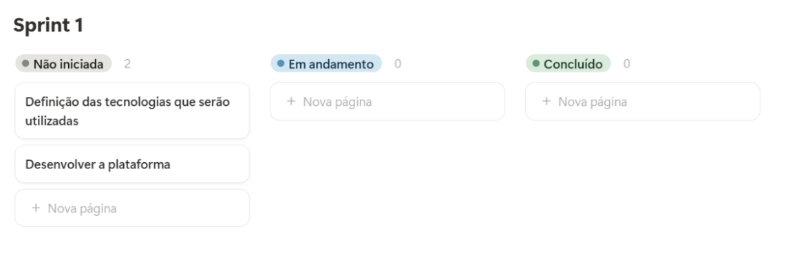

Apresentação do Projeto
TCC Escola da Nuvem - Módulo RESTART
Alunos:
Lucas Edson Robson Pereira Gabriel Henrique Raphael Moura Ícaro Wanderley Rosimar Cavalcante Igor Jose Erick Reis da Silva
Projeto: Avalia.AI
Descrição do Problema:
Segundo o SINPRODF (Sindicato de Professores do Distrito Federal): “Um professor investe cerca de 15 minutos para corrigir bem uma prova mais estruturada e cerca de 8 minutos para uma prova mais curta. Considerando isso, por exemplo, se um professor tiver 100 alunos num semestre, são 1500 minutos ou 25 horas por prova ou no mínimo 14 horas de correção para provas mais curtas. Se o professor precisar aplicar pelo menos 3 avaliações no semestre, serão no mínimo 42 horas dedicadas só para esta atividade.” Com essa demora na correção de provas o professor tem muito desgaste físico e psicológico, além de exceder a carga horária, muitas vezes sem remuneração para isso.
Stakeholders:
- Professores
- Instituições de ensino
- Estudantes
- Pais
Solução:
O Avalia.AI é uma plataforma inteligente para o planejamento, criação, aplicação e correção automatizada de avaliações escolares. Combinando um robusto banco de questões. Utilizando algoritmos de visão computacional e inteligência artificial, o sistema permite que educadores elaborem provas personalizadas em poucos cliques, além de automatizar a correção de respostas manuscritas ou digitais, reduzindo drasticamente o tempo de avaliação e aumentando a precisão e imparcialidade. Além disso, os alunos poderão ter acesso a boletim online.
Levantamento de Requisitos
Requisitos Funcionais:
- O login será feito através de email e/ou autenticação com o Google.
- O sistema deve permitir que professores criem avaliações de forma prática e online com base num banco de questões.
- O sistema irá gerar a prova e o cartão resposta no formato pdf.
- O sistema deve permitir avaliar as provas de forma automática.
- O sistema deve permitir que o aluno veja as notas das avaliações individuais, como também, boletim.
- O sistema deve gerar relatórios individuais, e de turma.
Requisitos Não Funcionais:
- O Sistema será WEB.
- O Design deverá ser responsivo para Desktop e Mobile. A interface deverá ser intuitiva e com acessibilidade de acordo com WCAG (Web Content Accessibility Guidelines) e ABNT NBR 17225.
- O sistema será multitenancy, compartilhando o mesmo banco de dados de forma isolada.
- O sistema deve garantir a privacidade e segurança dos dados dos usuários, conforme a LGPD.
- O sistema deverá ser escalável.
- O sistema deverá ter alta disponibilidade.
- O sistema em geral, será armazenado em um Banco de Dados SQL (Postgres).
- O sistema específico da correção automática será um micro serviço
- O sistema deverá ter deploy contínuo e integração contínua.
MVP (Produto Mínimo Viável):
- Registro dos stakeholders
- Criação fácil da prova, inspirado no Google Forms e Microsoft Forms.
- Correção automática com visão computacional.
- Relatório das correções
Planejamento Ágil:
Backlog de Tarefas:
- Definição das tecnologias que serão utilizadas.
- Desenvolver a plataforma.
- Desenvolver o micro serviço de correção.
- Integrar o micro serviço com a plataforma.
- Realizar testes automatizados (unitários e de integração)
- Deploy do Sistema.
Sprints:
- Sprint 1: Desenvolvimento da plataforma. (7 dias)
- Sprint 2: Desenvolvimento do micro serviço de correção e integração do micro serviço com a plataforma. (15 dias)
- Sprint 3: Realizar testes automatizados (unitários e de integração) e deploy do Sistema. (7 dias) Quadro (Board):
Referências:
https://www.sinprodf.org.br/6-atividades-que-mais-tomam-tempo-do-professor-e-como-minimiza-las/
Sprints
Cronograma de Desenvolvimento:

Sprint 1: Desenvolvimento da plataforma. (7 dias) 
Sprint 2: Desenvolvimento do micro serviço de correção e integração do micro serviço com a plataforma. (15 dias)

Sprint 3: Realizar testes automatizados (unitários e de integração) e deploy do Sistema. (7 dias)